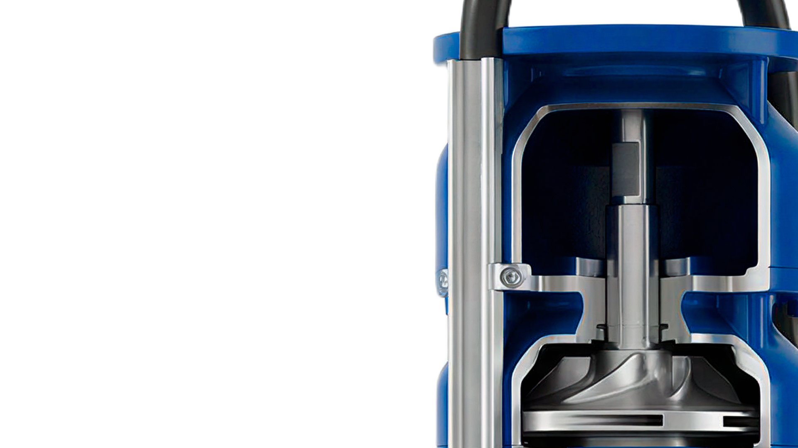

淄博颜山电泵实业有限公司
公司聚焦潜水电泵、给水泵、潜污泵、离心泵、渣浆泵等各类水泵生产，服务市政工程、工业生产、矿山排水、水利灌溉等多类流体输送场景。产品畅销全国各地，同时还远销到非洲、中东、东南亚等几十个国家和地区。
PUMP SYSTEM SOLUTIONS
满足城市给排水、农业灌溉、采暖制冷、消防水利、石油化工、煤炭矿山、电站电厂、造纸印染、污水处理、景观喷泉、河道清淤等行业的需要。

给水泵、潜水泵、离心泵、渣浆泵与成套机组。
02 行业方案按市政、工业、矿山、水利等场景匹配系统。
03 制造能力从结构设计、装配检测到出厂交付稳定管控。
04 服务支持提供售前选型、现场调试、维保与配件供应。
ABOUT YANSHAN
公司聚焦潜水电泵、给水泵、潜污泵、离心泵、渣浆泵等各类水泵生产，服务市政工程、工业生产、矿山排水、水利灌溉等多类流体输送场景。产品畅销全国各地，同时还远销到非洲、中东、东南亚等几十个国家和地区。
PRODUCT CENTER
以客户工况为起点，围绕流量、扬程、介质、安装方式和能效目标提供产品选型与配套建议。

适用于建筑给水、工业循环、水厂增压和一般清水输送工况。

覆盖深井取水、矿井排水、农田灌溉、市政排污等应用。

面向含砂、含渣、高磨蚀介质输送，重视耐磨结构与维护效率。

支持泵组、电控柜、阀门、管路、底座与现场调试一体化交付。

用于高层建筑供水、锅炉补水、恒压供水与小流量高扬程场景。

适用于市政污水提升、地下室排水、雨季排涝和临时应急排水。

将泵组、变频控制、稳压罐和阀门管路集成，满足稳定供水需求。

面向弱腐蚀性液体、循环工艺水和特殊介质输送，按介质选材。
SOLUTIONS
按照行业场景组织方案入口，帮助客户从问题出发找到对应产品、配置和服务路径。
泵站提升、雨污水输送、水厂增压、城市排涝与应急排水。
冷却循环、锅炉补水、厂区给排水、工艺水输送与节能改造。
井下排水、高扬程输送、含颗粒介质处理及备用泵组配置。
深井取水、农田灌溉、河道提水、小型泵站与远程控制。
MANUFACTURING
确认流量、扬程、介质、安装条件、运行时长和能耗目标。
根据清水、污水、含砂和腐蚀性介质选择叶轮、密封及过流部件。
关注转动部件、密封、电机匹配和整机运行稳定性。
配合现场基础、电控逻辑、管路阀门和运维要求完成交付。
SERVICE
从项目早期参数确认到设备运行后的巡检维护，建立清晰可追踪的服务闭环。
协助确认工况参数、泵型选择、备用方案和预算范围。
支持现场安装指导、控制联动、试运行与问题排查。
提供巡检重点、易损件更换、能耗观察和异常处理建议。
针对叶轮、密封、轴承、电机等关键部件提供后续保障。
NEWS
用于发布企业动态、项目交付、产品知识和行业应用文章，增强官网持续运营能力。
从工况目标、介质特性、运行时间与后期维护建立基础判断。
围绕密封、轴承、叶轮磨损和备用泵组制定巡检策略。
安装空间、电控逻辑、管路走向和备用机制都会影响交付质量。
CONTACT
请提供流量、扬程、介质、安装方式、运行时长和项目所在地，我们将协助完成泵型匹配与系统配置建议。